Zakonnicy
Na tej stronie prezentuję kilkanaście zdjęć przedstawiających krzeszowskich benedyktynów. Niestety, nie posiadam opisu do tych zdjęć, ale z dużym prawdopodobieństwem mogę powiedzieć, że wszystkie one związane są z Krzeszowem.
| 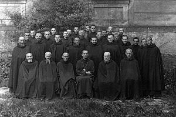 | Zdjęcie grupowe zakonników, w tle widać budynek klasztorny. |
| 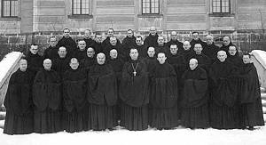 | Inne zdjęcie grupowe na tle klasztoru. |
| 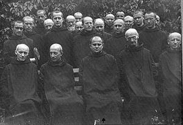 | Zdjęcie zakonników w sadzie. |
| 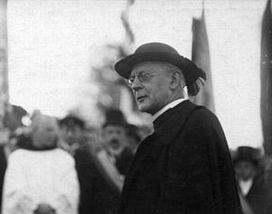 | Tutaj nie wiem kogo widzimy na zdjęciu. dodano 26-09-2013: Zdjęcie przedstawia kardynała Adolfa Bertrama. (informacja za Silesiusxpp) |
| 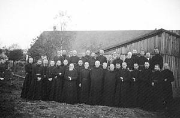 | Zdjęcie grupowe na tle zabudowań gospodarczych (nie wiem gdzie). |
| 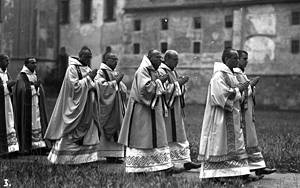 | Procesja zakonników. W tle widać łącznik pomiędzy kościołem a klasztorem. |
| 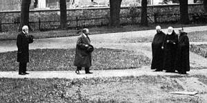 | Zakonnicy najprawdopodobnie gdzieś na Placu Kościelnym, tak przynajmniej sugeruje charakterystyczny mur w tle. |
| 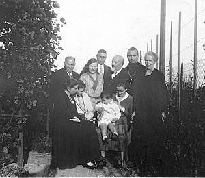 | Tutaj najprawdopodobniej rodzina jedengo z zakonników. dodano 26-09-2013: Zdjęcie przedstawia rodzinę opata Alberta Schmitta (informacja za Silesiusxpp) dodano 03-10-2014: Jak mnie poinformował Pan Krystian Michalik, zdjęcie to znajduje się w książce Lob B., Albert Schmitt OSB, Abt in Grüssau und Wimpfen, Köln- Weimar- Wien 2000 dostępnej on-line na google books i jest tam opisane jako wykonane w Mannheim w 1931 roku. Za informację dziękuję. |
| 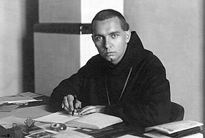 | Albert Schmitt |
| 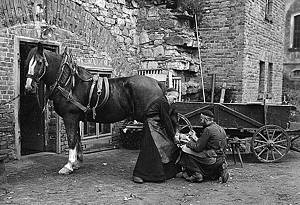 | Kucie konia. O poszukanie tego miejsca można by się pokusić .... |
| 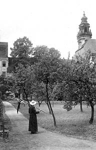 | I zakonnik z kosą. To zdjęcie jest zrobione za budynkiem klasztoru w stronę św. Anny. |

{kind=link}
{kind=link}
{kind=link}
{kind=link}
{kind=link}
{kind=link}
{kind=link}
{kind=link}
{kind=link}
{kind=link}
{kind=link}